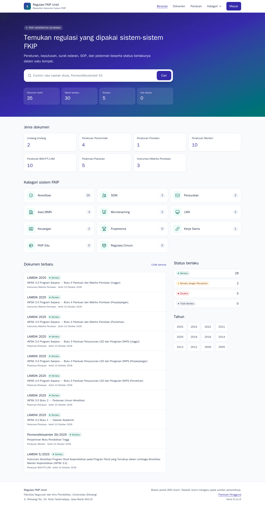
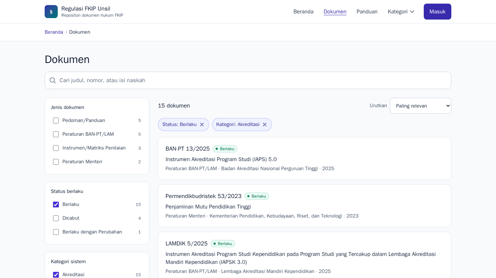
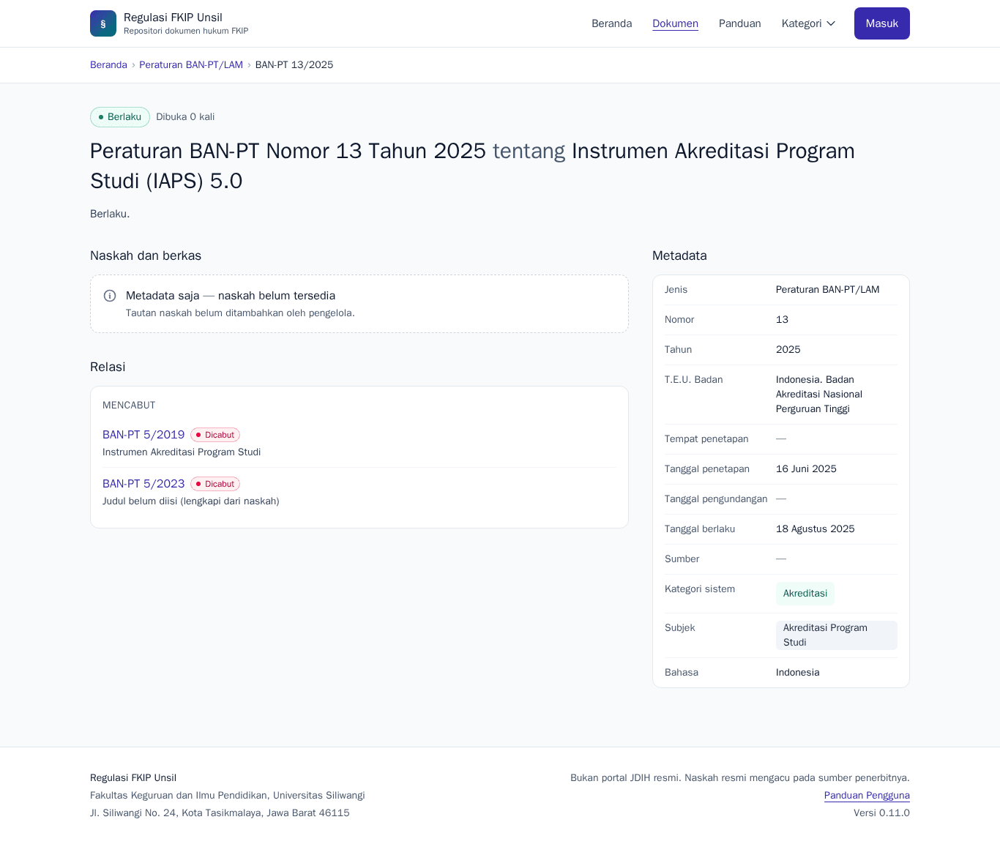
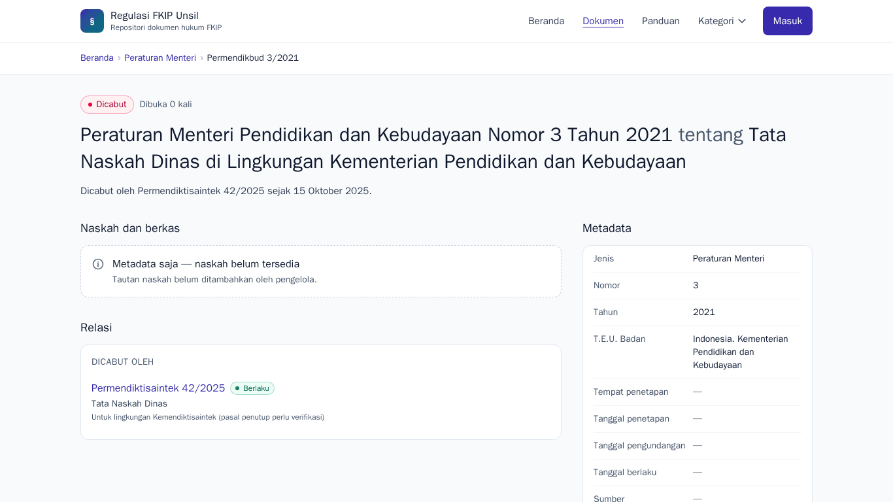
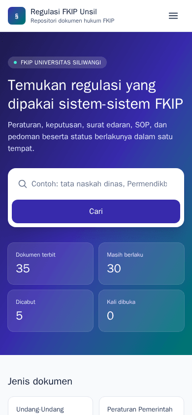
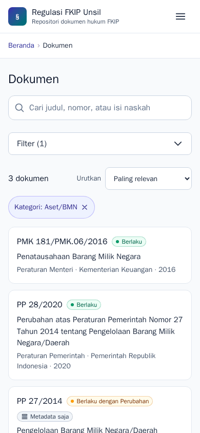
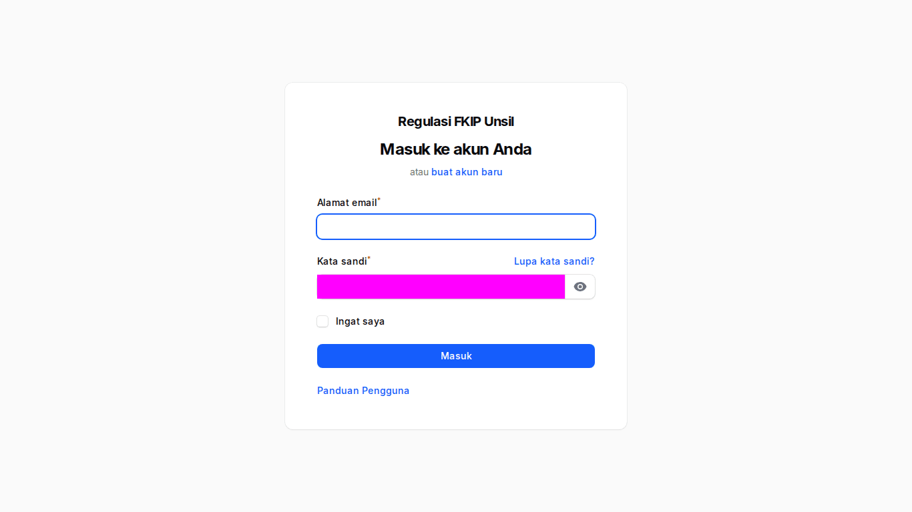

Panduan Pengguna
Regulasi FKIP Unsil adalah repositori terpusat dokumen hukum dan dokumen pendukung (UU, PP, Permen, Peraturan BAN-PT/LAM, keputusan rektor & dekan, surat edaran, SOP, pedoman) yang dipakai sistem-sistem FKIP Universitas Siliwangi. Setiap dokumen memiliki metadata lengkap, status berlaku (berlaku, berlaku dengan perubahan, dicabut) yang diperbarui otomatis dari relasi antardokumen, dan tautan naskah di Google Drive atau situs sumber resmi.
Aplikasi tidak menyimpan berkas: naskah berupa tautan ke Shared Drive "Regulasi FKIP" atau sumber resmi pemerintah. Ini bukan portal JDIH resmi; naskah resmi mengacu pada sumber penerbitnya.
Buka portal → · Masuk panel staf → · Masuk akun pengguna →
Mencari dokumen (semua orang)
- Beranda
Ketik kata kunci di kotak pencarian (toleran salah ketik, mis. "permendikbudrstek 53"), atau pilih kartu jenis/kategori.
Beranda portal - Daftar & filter
Di Dokumen pilih filter jenis, tahun, status berlaku, kategori sistem, atau T.E.U. Alamat halaman menyimpan filter sehingga dapat dibagikan.
Daftar dokumen berfilter - Detail dokumen
Halaman detail memuat metadata (T.E.U., tanggal penetapan & berlaku), status, relasi (mencabut/dicabut oleh, mengubah/diubah oleh), tombol Tampilkan pratinjau dan Buka berkas. Dokumen rujukan bertanda "Metadata saja — naskah belum tersedia".
Detail dokumen - Status dicabut
Dokumen yang dicabut menampilkan badge Dicabut dan kalimat "Dicabut oleh …" yang dapat diklik.
Dokumen berstatus dicabut - Di ponsel
Menu dan filter dapat dibuka-tutup; tidak ada gulir horizontal.
Beranda (ponsel) 
Daftar dokumen (ponsel)
Masuk
Halaman masuk tampil dua kolom: keterangan aplikasi di kiri dan formulir di kanan (di ponsel bertumpuk). Pengguna kampus masuk/daftar di Akun (tombol Masuk di portal) dengan surel @unsil.ac.id. Staf (kontributor, admin) masuk di panel /regulasi/admin; admin regulasi dan super admin wajib MFA (aplikasi autentikator).

Bila muncul halaman eror
Halaman eror (mis. 404 Halaman tidak ditemukan, 403 Akses tidak diizinkan, 419 Sesi telah berakhir) selalu menyediakan tombol Kembali dan Ke beranda. Untuk 419 muat ulang lalu masuk kembali; untuk 429 tunggu sekitar satu menit; untuk 500/503 coba lagi beberapa saat lagi dan sampaikan waktu kejadian kepada Admin TI Fakultas bila berulang.
Pilih panduan sesuai peran Anda
- Pengguna Terdaftar
penggunaMembaca dokumen publik dan internal setelah masuk dengan akun @unsil.ac.id; tamu tanpa akun dapat membaca dokumen publik.
- Kontributor Sistem/Unit
kontributorMengisi draf dokumen (metadata + tautan berkas) untuk kategori sistem yang ditugaskan, lalu mengajukannya untuk verifikasi.
- Admin Regulasi Fakultas
admin-regulasiMemverifikasi dan menerbitkan dokumen, mengelola relasi & status berlaku, master data, tautan bermasalah, dan laporan.
- Super Admin (TI Fakultas)
super-adminMengelola pengguna & peran, klien API dan token, log aktivitas, serta Horizon (antrean).
Kontak
Admin Regulasi FKIP (regulasi-fkip@unsil.ac.id) · Admin TI Fakultas untuk akun & MFA